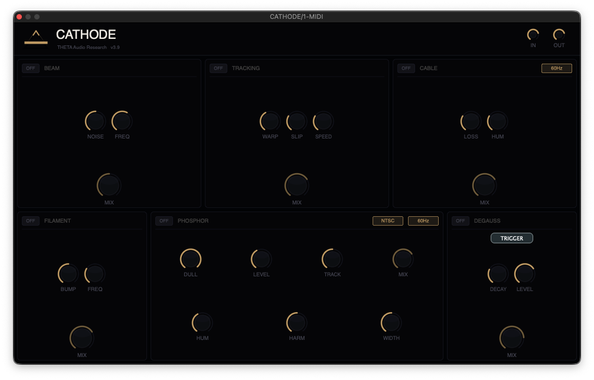

High-voltage bias simulation for organic harmonic grit and frequency-dependent compression.
Fine-tune the response curve of the virtual tube, ranging from clinical to catastrophic.
Archive-grade distortion modeling. CATHODE captures the inherent instability of physical hardware.